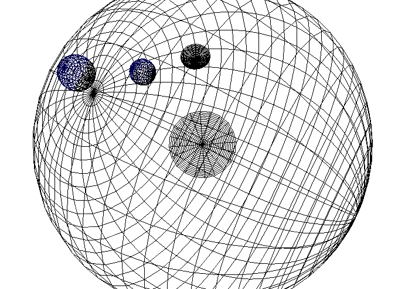

Sponge
SPONGE stands for Sphere PONG Extreme. It is an experiemental game, the idea of which was to implement something like the classic game pong (played in a 2d rectangle) into a 3d sphere. In a sphere in 3D space, I hoped to expand on the idea of pong to allow more than two people to play. I anticipated team games (2 on 2), or 1 on 1 on 1 free-for-alls. The thinking was that the sphere could be automatically partitioned into player areas depending on the position of the corresponding player paddles.
I wrote this game in summer of 2003 using straight C, OpenGL and SDL. By this time, I knew the basics of linear algebra. But I ended up discovering spherical coordinates accidentally. Here's an obligatory screenshot:

CategoryProject CategoryGame